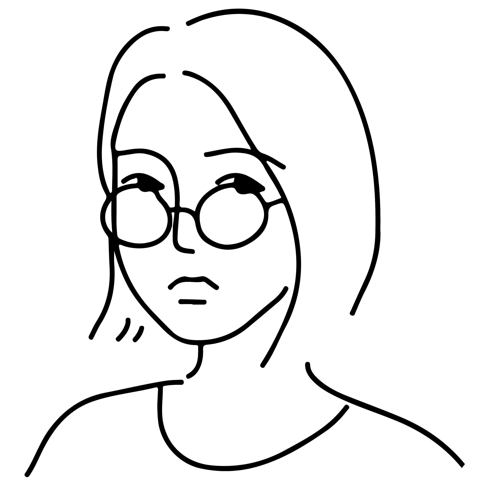

Instagram
@
yunyi.design
E-mail
hello@yunyi.design
Mobile
+61 420-845-561
I’m a multi-disciplinary designer, graduated from Monash University with a bachelor degree of Communication Design. I specialise in brand identity design, photography and illustration. Each design is concept driven, developing a unique solution that is specific for each project.
If you'd like to discuss a strategic approach to the design, redesign, or refinement of your visual branding, please don't hesitate to get in touch with me. :)
Monash University —
Bachelor of Communication Design (Graduated 2017)
Freelance —
Various clients (Dec 2017–present)